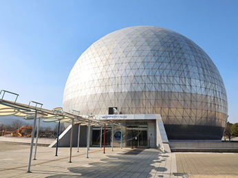
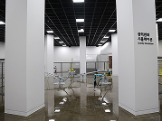

천문우주관
point_scan천체투영관
- 별자리 해설, 오늘 밤하늘을 미리 만나다
- 과천과학관의 천체투영관(Planetarium)은 직경 25m의 국내 최대 돔스크린에 광학식 투영기와 디지털 투영시스템을 갖추고 있는 돔 상영관>입니다. 이곳에서는 밤하늘의 별과 행성들의 위치를 돔스크린에 투영하여 맑은 날 도심을 벗어나야 볼 수 있는 아름다운 밤하늘을 천문해설사의 별자리 이야기와 함께 체험할 수 있고, 태양계와 우주, 바닷속 산호와 오로라 등 다양한 주제의 돔 영화를 선택∙관람할 수 있습니다.
- [천체투영관 전경]
- 
- [별자리 해설]
천문대
- 낮에는 태양과 밝은 별을, 밤에는 달과 행성, 별과 심우주 천체를 볼 수 있는 천체 관측소
- 국립과천과학관 천문대는 야외전시장의 천체투영관 뒤편 언덕 위에 있습니다. 여러가지 망원경으로 낮에는 우리별 태양의 모습을 다양한 방법으로 관찰하고, 밤에는 계절별 관측조건에 따라 잘 보이는 천체들을 보여드립니다. 소형 망원경을 직접 조작, 실습해보는 프로그램도 있습니다.
- [천문대 주간 전경]
- [천문대 야간 전경]
-
- | 1m 반사망원경, 낮에도 별을 볼 수 있다?
- 천문대가 보유한 1미터 반사망원경은 설치되던 2008년에는 일반인이 경험할 수 있는 최대 규모였지만, 현재는 1미터급 공개망원경이 전국에
10대 있습니다.
태양 빛이 압도적인 낮에도 별을 볼 수 있고, 밤에는 아주 희미한 성운이나 성단도 관측할 수 있습니다.
거대한 몸집의 망원경이 원형 돔과 함께 별빛을 향해 움직이는 모습도 인상적이지요.
[주관측실 1미터 반사망원경]
-

- | 망원경의 종류를 한자리에서 만나보자!
- 천문대 보조관측실에는 다양한 종류의 광학 망원경들이 단단한 기둥에 설치되어 있습니다.
어떤 차이가 있는지 한눈에 비교해 볼 수 있지요. 이곳에서는 낮에 우리별 태양을 관찰합니다.
태양 필름 마스크를 이용할 수도 있고, 다양한 필터를 장착한 망원경으로 흑점이 보이는 태양의 맨얼굴과 태양 대기의 솜털같은 폭발현상을 볼
수 있습니다.
밤에는 행성과 별들을 관측하면서 놀라운 천체들의 신비를 발견할 수 있어요.
[보조관측실 반사망원경과 굴절망원경]
-
- | 국내 유일의 대중 전파망원경
- 천문대 뒤편에는 직경 7.5미터의 거대한 안테나가 평소에는 하늘을 향해 있다가, 관측대상을 정해주면 그것을 향해 움직입니다.
과학관 전파망원경은 태양과 우리은하의 중성수소 등 다양한 전파원을 관측할 수 있어요.
[7.5미터 전파망원경]
-
- | 전시품-전파로 무엇을 볼 수 있을까?
- 휴대폰과 와이파이 등 일상에서 다양하게 활용되고 있는 전파가 천문학에서도 아주 중요합니다.
우주에서 관측되는 전파를 통해 우리가 알아낸 것들은 무엇일까요?
[우리은하의 전파(21cm) 관측]
스페이스 아날로그
- 우주로 나가기 위해 반드시 수행해야 하는 극한의 우주환경 적응 모의훈련을 의미
- 우주탐사에 필요한 다양한 우주인 훈련 및 인류가 장차 화성에 도착했을 때 수행해야 하는 임무를 실제로 체험해보고, 관련 지식을 습득해볼 수 있는 있는 국내 유일의 우주탐사 특화 전시관입니다.
- saved_search
-  saved_search
- saved_search
- saved_search
 saved_search
saved_search
- saved_search
SPACE ANALOG